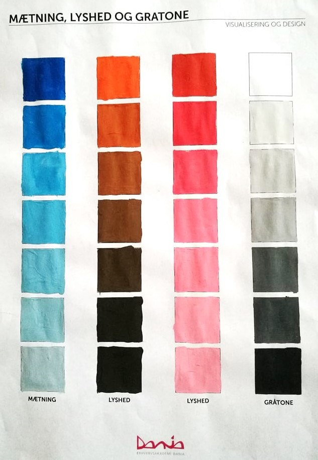

Farve teori

Udviklingen af farver
I starten havde de forskellige lande, alle den samme tankegang, nemlig at alle farver havde en betydning, fastsat på noget bestem for alle.
Nu i dag har forskellige farver, forskellige meninger for folk, fordi vores følelser og oplevelser med vores omgivelser, og farver, giver forskellig mening til farverne.
Farverne i gamle dage var meget kønsopdelt, blå var en drengefarve og pink var en pigefarve.
Primære farver har udviklet sig meget gennem tiden, og farve panelet har udvidet sig massivt i form af hvor mange farver der bliver brugt.
Farvehjulet
Isaac Newton påviste at man kunne sætte farverne op i en prisme, farvehjulet. Han fandt ud af lys gennem en prisme skabte regnbuens farver, og at de to farver der var ende farverne, mindede meget om hinanden - var næsten den samme farve.
Kulør, mætning og lyshed
Som der kan ses på farveskemaet jeg lavede i skolen, kan man se forskellen på de forskellige former for farver.
Kulør eller hue
Når man ændre i kuløren af en farve, laver man en graduering, eller en anden version af en bestem farve.
Mætning eller saturation
Når man piller ved mætningen af en farve, tager man en farve som f. eks. blå, og tilsætter derefter grålige farver.
Lyshed eller brightness
Her er der tale om en farve der bliver blandet med sort eller hvid.
Logo
Farver i forhold til logo'er er vigtige at ramme rigtig i forhold til det produkt der prøves at sælges. Kunden har ikke altid ret, men man skal ikke skyde deres ide ned, men snakke om den.
Logo som Google, har med sine mange farver et budskab om at de gerne vil ramme en massiv stor brugerflade.